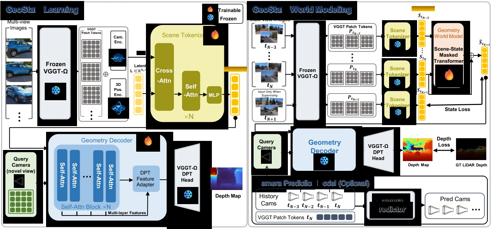
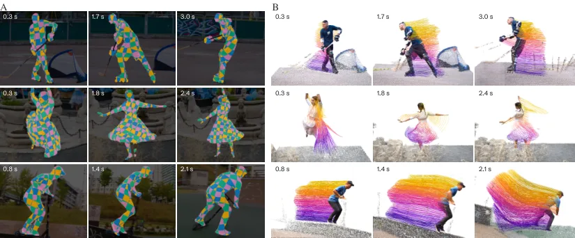

新论文 · 日期 2026-10-16 · score 17 · S层 · Geometry Foundation Models / 3D Foundation Models · cs.CV, cs.AI, cs.LG, cs.RO
内容级别：完整单篇海报
作者：Hongchang Liu, Jian Liu, Yujuan Ding, Liang Peng
评分 17/10
视角解耦几何基础模型场景 tokenizer3D 世界模型深度预测尺度一致性VGGT-ΩFR3D零样本迁移
一句话工作总结：GeoState 把冻结 VGGT-Ω 的多视角几何特征压成固定 512×512 场景状态，查询相机只在解码阶段以 Plücker 射线进入，从而把“世界是什么”与“如何观察”分开。Waymo 预测相机设置下 t+2.0 s AbsRel 0.127、δ1 0.848，比 VGGT-World 的 0.213/0.731 低 40.4%，且整个 rollout 只用最后观测帧…
近期的 3D 世界模型越来越多地把几何基础模型（GFM）的特征当作预测性世界状态，看重其丰富的几何先验。但这些特征对视角的依赖会把场景动态与相机引起的变化纠缠在一起，使状态演化更难预测。本文提出 GeoState：一种视角解耦的几何表示，用于预测式 3D 世界建模，把场景状态演化与依赖相机的观测分开。具体来说，场景 tokenizer 把多视角 GFM 特征聚合成视角解耦的场景状态，几何解码器再用相机射线查询该状态…
Recent 3D world models increasingly use features from geometry foundation models (GFMs) as predictive world states, benefiting from their rich geometric priors. However, the view dependence of these features e…

新论文 · 日期 2026-10-16 · score 11 · S层 · Geometry Foundation Models / 3D Foundation Models · cs.CV
内容级别：完整单篇海报
作者：Rıza Alp Güler
评分 11/10
4D 人体对应Human Point Map无模板amodal 对应点跟踪VGGT-Ω4D-DRESS动态场景
一句话工作总结：Dense4D 用“参考时刻 3D 坐标”定义人体表面点身份：一次前向为所有帧预测 HPM 与深度，靠 HPM 最近邻匹配建立跨帧对应，再用目标帧深度抬升为 3D 轨迹，全程不需要人体模板，也不预测相机位姿。Panoptic Studio Humans 上 AJ 38.4、APD 50.3、OA 89.6，分别比最强基线高 21.4 与 22.7 个百分点；4D-DRESS…
在 4D 中重建人体运动，需要在关节运动、形变和可见性变化中识别同一个表面点。本文提出 Dense4D：据我们所知，这是首个专用于密集 4D 对应的前馈模型，可从一组单目 RGB 图像建立身体、衣物与头发之间的像素级对应，且不需要人体模板。模型专门针对人体几何训练，联合处理以人为中心的裁剪与已知的图像到裁剪变换，为每张图预测 Human Point Map（HPM）与深度。HPM 把每个人体像素分配到其观测表面点在…
Reconstructing human motion in 4D requires identifying the same surface points through articulation, deformation and changes in visibility. We introduce Dense4D, to our knowledge the first feed-forward model d…